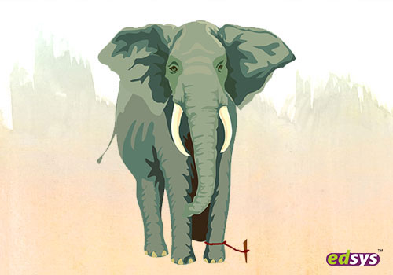

Cell 3.47 was situated on the third floor of B wing in Stocken Gate prison, slap bang in the heart of London’s east end. Known as The Gate, the prison had a reputation for being a tough place to do time. The inmates behind the doors at The Gate endured long cold winters in the Victorian slammer that had been condemned many times but had always escaped closure. It was harsh, it was hard, and it was overrun by rats.
Paula Pritchard was the sole resident of cell 3.47, but due to the rodent crisis she was rarely alone. All her schemes to see to them perish had failed miserably and she had to accept that while they might have won the ultimate war, her hatred of the vermin would ensure that her battle against them raged in perpetuity. After all, she had time.
Paula was serving life for murdering her husband after he cut their TV wires in 1986 causing Paula to miss the Eastenders Christmas Special. She was still bitter; there was no catch-up TV back then. In fact, she had more remorse for that than she did for the murder, which wasn’t convenient when it came to trying to persuade the parole board to release her, so she had stopped bothering to try.
Instead, Paula put all her efforts into ensuring that she was in sole control of the contraband that was bootlegged into The Gate on a daily basis. Somewhat against all the odds, she had turned out to be an exceptional entrepreneur with incredible business acumen but would never win a Women In Business award. As she got into bed now, she plotted her next scheme for fulfilling the cocaine orders that always started to pile up at this time of year. The girls in The Gate knew how to celebrate Christmas alright.
Rita watched and waited from her vantage point on the top of the bookshelf. Paula’s eyes were getting heavy, she would be out for the count soon. Rita could be patient, no problem. You learned that as a prison rat. Sometimes tactics were everything. She swung her back paws and applied a little face cream to her tail. One of the best things about living in cell 3.47 was that Paula’s customers often paid in canteen. This meant a reliable stock of snacks, beauty products, paper, and easy access to all manner of things that were dispensed from the canteen hatch. Rat heaven.
Prison life for a rat could be easy but you had to have your wits about you. There was a constant supply of water in the steel lidless cell toilet. Pritchard had tried many times to deny Rita and her crew access to that but had never succeeded. In any event there was a small sink on the wall, and the tap constantly dripped. The sink was big enough for a family of four rats to take a bath, and Rita had even seen a water birth be facilitated in it by the alternative lifestyle rats who lived behind the skirting boards in the staff room in the segregation unit, also known as The Block.
As soon as Pritchard fell into her doubtless drug induced sleep, Rita tucked into a packet of Cheetos. Delicious. Pudding was a packet of Cadbury’s hot chocolate which she’d had her eye on since it had arrived this morning. But during the daytime the rats didn’t come out so much. It was at night when they got their business done. After dinner, Rita was helping to coordinate the digging of a new tunnel after the maintenance team accidently poured concrete into the main thoroughfare between B and C wing.
She watched as Roly gnawed his way into a pot of noodles. He glanced up and nodded to her with his mouth full, powder from the noodles coating his whiskers. She winked at him fondly. They had been together for five litters, and still they flirted liked newlyweds. Roly was a big old unit, a rat who’d eat all night if he could. He wasn’t quite as exacting as Rita when it came to menu choices, and last week had eaten a whole box of tampons which had sent Pritchard into a rage when she’d discovered the mess in the morning.
Roly didn’t care, but it had almost killed him. He hadn’t been careful enough and a piece of plastic applicator had got lodged in his gullet. Rowena, unable to get her paws around him to perform a Heimlich manoeuvre, had jumped on his furry white chest to clear his airway. Rita had been beside herself and if it hadn’t been for her daughter’s quick-thinking Roly would have been toast. But within two hours Roly was reaching for an Oreo and telling the tale as if he was the hero to most of the rats on the third floor. They’d all laughed and patted him on the back.
The next day Pritchard was crashing around the cell, cursing about not being able to find any coffee sachets (Rita had swapped them for a packet of cotton wool with Riccardo from healthcare), and generally being her bad tempered, vile self. Rita knew that at times like this it was better to give Pritchard a wide berth than risk her wrath which knew no bounds especially when it came to rats. Plastic cups and cutlery fell to the floor, books were cast aside and make up thrown all over the place as the fruitless search went on. Rita, Roly, and Rowena went for a nap in their nest behind the wall, tummies full and whiskers cleaned.
It wasn’t until much later that they peered out and saw Pritchard behaving most strangely. She was dressed in nothing but an Avengers T shirt and a pair of woolly socks and appeared to be batting imaginary insects away with this week’s edition of Prison News. She uttered something incomprehensible about jungle fever and then proceeded to attempt some kind of Scottish jig. The rats knew that Pritchard was hallucinating, they had seen it with so many inmates’ countless times. They smoked too much Spice and simply went doolally. Sometimes it went further than that and a heart attack wasn’t that uncommon, but Pritchard didn’t seem to be that far gone despite the pantomime that was being played out before them now.
Rat word got out and several others came to watch the show. Ruby from the canteen had even brought popcorn, but it was salty, so Rita didn’t bother with it. Just before Pritchard was about to climb up to the bookshelf to launch herself into what she believed to be a luxury swimming pool but was in fact her prison issue laundry basket, something caught her eye. The rats froze. Pritchard picked up her radio and launched it full force into the spectating crowd of vermin. Rita watched in horror as the plastic transistor hurtled in slow motion towards them. There was no time to react, and with an almighty smash it landed on Roly. Within an instant two things happened. Pritchard vomited all over the floor, and blood began to seep from Roly’s head. His pink ears drooped, his breathing slowed.
The rats rallied round, hitching Roly’s sizeable frame onto their shoulders and scuttling into the B wing tunnel with him. By now Rita was sobbing, her tail in her paws. Rowena squeaked instructions as fast as she could, but it seemed that Roly could not be saved. His wide black eyes still gleamed as he gazed into Rita’s tear-filled ones. ‘I love you Rita Rat’ he said, and then he was gone. Rita felt like her world had fallen apart. Riley and Rose from education ushered her to their nest. She let them. She let them feed her syrup on a Q tip and then she slept a fitful sleep with Rowena at her side.
The next day Rita felt numb, but she went back to cell 3.47, where Pritchard’s vomit still pooled on the concrete floor, ice forming on it in the mid December chill. Even the family of rats from security hadn’t fancied that. Pritchard herself was akimbo on the bed, oblivious to it all.
Rita stopped crying and looked at Pritchard, that mean tempered woman who had ruined Rita’s life. There was only one thing Rita wanted now. Revenge. And everyone knew that revenge was a dish best served cold.
 That night a meeting was called, chaired by Ricky from recycling. He even had a clip board. Hundreds of rats were there to hear what he had to say, while Rita sat quietly beside him with a tissue balled tightly into her fist. A plan was afoot. Pritchard was to get her comeuppance. But were the rats in? ‘Hell yes!’ they shouted, hats and snacks thrown into the like confetti. The excitement grew, and after the meeting, they divided into groups according to their wings and floors. Bigger departments like the laundry would help with logistics and coordination. If the drugs dog from rehab was to be believed and trusted, they had exactly two weeks to go before the cell spin.
Meanwhile, prison life went on. Paula spent hours in cell 3.47 taking orders and singing along to Last Christmas which played on repeat on the radio which she had recently acquired as a replacement by breaking Kelly Gorman’s little finger during a game of pool. She could see her breath when she sang, that’s how cold it was in here. The kettle was on the boil constantly, and for once her hot chocolate and coffee supplies were not being pilfered every night. Odd, but good. If the Christmas trade was as good as anticipated, she reckoned she’d have enough cash to bribe Officer Willis into putting her in for a transfer to a modern prison where she could learn to play tennis and grow old gracefully.
Every night the tunnels were full of rat traffic. Never before had such an effort been orchestrated to help one of their own. Rita was beyond grateful but didn’t know if they could pull it off. But for Roly, she was prepared to try. The day of the cell spin finally arrived. The day when every cell at The Gate was searched, with absolutely no prior warning given to the prisoners who were made to stand on the landing while specialist teams went through their cells with a fine toothcomb. The one thing the rats didn’t know was the time of the spin. But Reece from The Block said not to worry. Everything was in place and Ricky was all over it like a rat rash.
Rita spent the whole day watching Pritchard. It didn’t take her long to realise that Pritchard must have been tipped off about the cell spin, because over the course of the morning all manner of drugs, mobile phones and weapons were dispatched out of her cell by officers who were on Pritchard’s pay role. No matter. The rats had a plan.
At two pm precisely, the alarm was sounded and an announcement over the tannoys boomed out, telling all inmates to exit their cells immediately. Rita’s whiskers twitched in anticipation as the rats behind her began to file into cell 3.47, sim cards under their arms. They dumped the sim cards and left, and a steady stream of rats continued to do the same. Rita had no idea how many sim cards were now piled up under Pritchard’s bed. Hundreds maybe? Collected from every mattress, nook and hiding place imaginable that the inmates at The Gate could dream up, over two weeks the rat teams had found them, stored them in the tunnels and brought them here today.
Pritchard’s face when the officer swept the sim cards out from under the bed was an absolute picture. She went from aghast to betrayed, shocked to furious in less than half a second. But ultimately, she was confused. And angry. Very angry. Two officers took her by the arms and hauled her down to The Block while she screamed her innocence and how she was being stitched up. Rita couldn’t have hoped for more. How the kingpin had fallen.
That night cell 3.47 was theirs alone, and everyone wanted to come to the party. There were rats in the bed, rats on the TV tuning into channels, rats in the drawers of Pritchard’s clothes, and rats hanging from the shelves and bars on the window. Rachel from kitchens had even managed to get four whole boxes of cornflakes up from the basement. They ate and partied until the early hours. Rita had cried as she made a thank you speech, and her heart felt like it might burst. In the morning it was Christmas Day, and this time there was no need to hide at daybreak. Pritchard would be cellular confinement with no windows three floors down and would not be returning any time soon.
Someone turned the volume back up on the TV. ‘Look!’ cried Rowena. ‘It’s a rerun of the 1986 Eastenders Christmas Special!’ The rats were quiet. None of them had been alive on the day that over 30 million viewers had tuned in to watch Den handing Angie her divorce papers, but they had heard Pritchard ranting about it their whole lives. What a shame, thought Rita, that Pritchard was going to miss this episode yet again. That temper of hers really had cost her dearly.
Prison News
Keeping you behind bars, but not in the dark
HMP Stocken Gate is to undergo a full security review after an inmate, who will remain nameless for legal reasons, was found with 347 sim cards in her cell. The CPS say that the occupier of cell 3.47 was taunting the authorities by collecting this precise number of sim cards and making no attempt to conceal them. She is accused of running the biggest bootlegging operation ever seen in British prison history and faces a 61-count indictment. She has been transferred to the maximum-security facility in Market Deeping where she will remain in solitary confinement until her trial.
That night a meeting was called, chaired by Ricky from recycling. He even had a clip board. Hundreds of rats were there to hear what he had to say, while Rita sat quietly beside him with a tissue balled tightly into her fist. A plan was afoot. Pritchard was to get her comeuppance. But were the rats in? ‘Hell yes!’ they shouted, hats and snacks thrown into the like confetti. The excitement grew, and after the meeting, they divided into groups according to their wings and floors. Bigger departments like the laundry would help with logistics and coordination. If the drugs dog from rehab was to be believed and trusted, they had exactly two weeks to go before the cell spin.
Meanwhile, prison life went on. Paula spent hours in cell 3.47 taking orders and singing along to Last Christmas which played on repeat on the radio which she had recently acquired as a replacement by breaking Kelly Gorman’s little finger during a game of pool. She could see her breath when she sang, that’s how cold it was in here. The kettle was on the boil constantly, and for once her hot chocolate and coffee supplies were not being pilfered every night. Odd, but good. If the Christmas trade was as good as anticipated, she reckoned she’d have enough cash to bribe Officer Willis into putting her in for a transfer to a modern prison where she could learn to play tennis and grow old gracefully.
Every night the tunnels were full of rat traffic. Never before had such an effort been orchestrated to help one of their own. Rita was beyond grateful but didn’t know if they could pull it off. But for Roly, she was prepared to try. The day of the cell spin finally arrived. The day when every cell at The Gate was searched, with absolutely no prior warning given to the prisoners who were made to stand on the landing while specialist teams went through their cells with a fine toothcomb. The one thing the rats didn’t know was the time of the spin. But Reece from The Block said not to worry. Everything was in place and Ricky was all over it like a rat rash.
Rita spent the whole day watching Pritchard. It didn’t take her long to realise that Pritchard must have been tipped off about the cell spin, because over the course of the morning all manner of drugs, mobile phones and weapons were dispatched out of her cell by officers who were on Pritchard’s pay role. No matter. The rats had a plan.
At two pm precisely, the alarm was sounded and an announcement over the tannoys boomed out, telling all inmates to exit their cells immediately. Rita’s whiskers twitched in anticipation as the rats behind her began to file into cell 3.47, sim cards under their arms. They dumped the sim cards and left, and a steady stream of rats continued to do the same. Rita had no idea how many sim cards were now piled up under Pritchard’s bed. Hundreds maybe? Collected from every mattress, nook and hiding place imaginable that the inmates at The Gate could dream up, over two weeks the rat teams had found them, stored them in the tunnels and brought them here today.
Pritchard’s face when the officer swept the sim cards out from under the bed was an absolute picture. She went from aghast to betrayed, shocked to furious in less than half a second. But ultimately, she was confused. And angry. Very angry. Two officers took her by the arms and hauled her down to The Block while she screamed her innocence and how she was being stitched up. Rita couldn’t have hoped for more. How the kingpin had fallen.
That night cell 3.47 was theirs alone, and everyone wanted to come to the party. There were rats in the bed, rats on the TV tuning into channels, rats in the drawers of Pritchard’s clothes, and rats hanging from the shelves and bars on the window. Rachel from kitchens had even managed to get four whole boxes of cornflakes up from the basement. They ate and partied until the early hours. Rita had cried as she made a thank you speech, and her heart felt like it might burst. In the morning it was Christmas Day, and this time there was no need to hide at daybreak. Pritchard would be cellular confinement with no windows three floors down and would not be returning any time soon.
Someone turned the volume back up on the TV. ‘Look!’ cried Rowena. ‘It’s a rerun of the 1986 Eastenders Christmas Special!’ The rats were quiet. None of them had been alive on the day that over 30 million viewers had tuned in to watch Den handing Angie her divorce papers, but they had heard Pritchard ranting about it their whole lives. What a shame, thought Rita, that Pritchard was going to miss this episode yet again. That temper of hers really had cost her dearly.
Prison News
Keeping you behind bars, but not in the dark
HMP Stocken Gate is to undergo a full security review after an inmate, who will remain nameless for legal reasons, was found with 347 sim cards in her cell. The CPS say that the occupier of cell 3.47 was taunting the authorities by collecting this precise number of sim cards and making no attempt to conceal them. She is accused of running the biggest bootlegging operation ever seen in British prison history and faces a 61-count indictment. She has been transferred to the maximum-security facility in Market Deeping where she will remain in solitary confinement until her trial.

A man was walking nearby to a group of elephants that was halted by a small rope tied to their front leg. He was amazed by the fact that the huge elephants are not even making an attempt to break the rope and set themselves free.  He saw an elephant trainer standing beside them and he expressed his puzzled state of mind. The trainer said “when they are very young and much smaller we use the same size rope to tie them and, at that age, it’s enough to hold them. As they grow up, they are conditioned to believe they cannot break away. They believe the rope can still hold them, so they never try to break free.” Moral: It is the false belief of the elephants that denied their freedom for life time. Likewise, many people are not trying to work towards success in their life just because they failed once before. So keep on trying and don’t get tied up with some false beliefs of failure.

In 1973, a man in Enfield, Illinois told reporters that he saw a weird little creature lurking in his yard. Per the Mt. Vernon Register-News, resident Henry McDaniel stated: It had three legs on it, a short body, two little short arms, and two pink eyes as big as flashlights. The police later found scratches on the door screen and footprints that looked like a dogs but with six toes. "If they do find it,” McDaniel said in the newspaper, "they will find more than one and they won’t be from this planet, I can tell you that.” To this day, no explanation has ever been found.

Leaning against a tarnished railing aboard a ferry, Katherine watched ocean waves curl into themselves. Close to her chest, she held a pewter urn containing her mother’s cremated remains. She breathed deeply, the taste of brine caking her tongue like damp ash. The midday sun reflected in droplets that quavered on the balusters, then trickled down like little rivulets, only to reappear from the periodic spray of waves breaking against the prow. Other ferry goers chattered around her, though Katherine was only vaguely aware of them. Her thoughts were on the last conversation she had with her mother. All this time out on the ocean, chasing fish — “Mommy, do you think we’ll see a whale today?” asked a little girl in polka-dots and a wide-brimmed straw hat, her voice somehow cutting through the din. “I hope so,” her mother replied, dressed in flowy linen pants and wearing lipstick the color of strawberries. The oversized straw hat reminded Katherine of a cowboy hat she tried to wear when she was young. It was oversized too, and quickly made her forehead sweat. It would shift down over her eyes as she galloped around the house, pretending to be a rancher, or cowboy, or sheriff chasing after an outlaw who was always a beautiful woman who smiled deviously, smoke curling from between her teeth, bullet holes perforating her own rawhide cowboy hat, an image that caused Katherine to grow warm and jittery and, inevitably, trip or bump into a wall, a table, her mother’s legs. “Take that thing off,” her mother had said. “But I’m a cowboy!” “Cowgirl. And cowgirls don’t need to wear boys’ hats like this. Take it off, I’ll buy you a prettier one.” “But I like this one. It was daddy’s.” With a serene smile, her mother gently lifted the hat away from her head, and Katherine will never forget the noiseless way she turned, almost perfectly on an axis, as though a steel wire ran through her core connecting her floor-to-ceiling, or the white of her knuckles she crumpled the hat into the kitchen garbage can. The little girl in the polka-dots bumped into Katherine’s leg accidentally; her straw hat fell atop Katherine’s feet. “Oh my gosh, I am so sorry!” her mother exclaimed. “It’s okay,” Katherine replied. “Melissa,” the woman said, turning to her daughter, “say you’re sorry. We can’t go around bumping into people, especially not on a boat.” “I’m sorry for bumping into you on a boat,” Melissa said, looking down so her tangled mass of curls covered her face. Katherine knelt down and retrieved the hat, handed it over to Melissa. “You know, I used to have a hat kind of like this. It was a little too big for me, so I’d run into stuff all the time. The trick is you’ve got to angle it up, like this.” She placed it on Melissa’s head slantways, the front brim almost perpendicular to the sky. “Plus, if you keep the brim away from your eyes, you can catch sight of a whale better. Around here, you’re looking for a gray whale. They leave big splashes that you can see from miles away, so watch the horizon. Or sometimes they’re sneaky, and do this thing called spy hopping, where they’ll just peek their heads out enough to see where they are. Watch for that too.” Melissa’s mouth gaped. “How do you know so much about whales?” “I’m a cetologist — a whale scientist.” “That’s so cool! Mommy, did you hear that?” “I did,” she replied, her voice lilting as her gaze lingered on the urn Katherine cradled. “Well, it was nice meeting you Melissa. Keep your eyes open, there’s bound to be some whales out today.” Melissa said thanks and returned to her mother’s side, who mouthed thank you, then parted her strawberry lips as though to give condolences, but decided better, and instead smiled with crinkled eyes that said sorry for your loss as she turned and meandered further along the railing, pulling her daughter close to her side. Echelon. That’s the supportive position a mother whale takes with her calf while swimming, to reduce the water drag. This means, of course, the mother must take on excess water drag. Katherine looked down at the urn, sunlight glinting off its smooth edges. Her mother had loved whales — cetaceans, as Katherine now thought of them. Her mother’s favorite was the gray whale, in fact. She had known little to nothing about gray whales, however; the preference was purely sentimental. She’d tell Katherine she went whale-watching with her father on the happiest day of her life, pausing for effect before delivering her coup de grace: that it was the day she found out she was pregnant. She said this often enough that Katherine could recite the second half of the phrase, rhythm, inflection and all, and would do so with rolled eyes, much to her mother’s chagrin. As a cetologist, Katherine knew that the average gray whale was approximately forty-five meters in length. She knew they weighed between thirty and forty tons, and that they were bottom feeders, turning laterally to skim the ocean floor, sifting stirred up sediment through their baleen, keeping the food and sieving out the rest. She knew their lives revolved around two things: one half of a year was spent gorging themselves, hopefully storing enough fat to make the long migration south, where during the second half of the year they would mate and rear their young. Once the calf was grown enough, it was time to make the treacherous journey back north. Had her mother known all this, she may have loved them more — or disliked them. Similarity breeds either camaraderie or resentment, there isn’t really any in between. Katherine’s mother had devoted her life to supporting her daughter, never remarrying, always working, and always, always keeping her in echelon. It’s part of what made their last conversation so difficult to stomach. “Mommy, look!” Melissa cried. Katherine saw it too — something gray and sleek, gliding just beneath the waves, not far from the bow. Her heart leapt; she leaned over the edge, taking care to redouble her grip on the urn. Was it a porpoise? No, too large. A whale? The size was right, but this was unlike any whale she’d ever studied. Whales lumbered. This, this shot through the water like a torpedo. After a moment, it disappeared abruptly into the depths, like a dumbbell dropped into the ocean. Katherine shook her head in disbelief, peered closer to be sure nothing was there. “Mommy, where’d the whale go?” “I don’t know, maybe it’ll come back up! Let’s keep watching.” “But where did it…” Katherine had no idea what they had just seen, but she knew it was no whale. Her breath quickened as the slap of the waves against the prow and the conversation between Melissa and her mother became muted. Dark and ominous, the deep whisked past with a cool urgency. Then, an explosion of water nearby, too loud to be a whale’s breach. Heads turned. Melissa’s hat fell to the deck. Out of the ocean, a matte gray object slid silently toward the sky, impossibly fast. It had already reached the clouds by the time droplets from its breach began falling into the bay, their pattering deafening compared to the absolute silence of the flying object. The craft stopped half-in half-out of cloud cover’s edge, immediate and precise, yet with an ease that indicated it carried no inertia. It hovered, then began slowly rotating. It was oblong, with small teal lights pulsing in a steady line down its center, as though it were breathing. Everyone aboard the ferry was silent. The sky itself seemed to lurch with the waves. Then, a mass of cumulus above the craft began to warp, as though God was pressing his thumb through tissue paper. But instead of a great whorled print, what pressed through was the long, rectangular nose of another craft, twice as large as the first. The smaller oblong craft attached to the bottom of it. Blue electricity arced along their fuselages, then the two craft, reunited, alighted soundlessly into the generous clouds. Melissa began to cry. People looked at one another, back at the sky, down at the ocean. Murmurs began rolling across the deck like pebbles preceding an avalanche. A searing white light flashed across the bay, so quickly that Katherine had no time to shield her eyes. For a brief moment, there was intense pain, then utter silence. Everywhere, a pure infinite white. No ocean, no sky, no way to orient. Katherine couldn’t tell if she was floating, standing, or lying down. She did know that she was alone. She hugged herself close and began to shake, panic welling up rapidly. “Hello,” came a voice, gentle and sonorous, surrounding her yet also within her. A silhouetted figure appeared in the distance, like an inky black pupil in the infinite white. It seemed humanoid; but, when it raised its arm there was the outline of a chitinous claw where there should’ve been fleshy fingers and a meaty palm. The silhouette’s arm, upheld, moved gingerly left, then right, then left. “What — what the hell is going on?” Katherine stammered. “You may be at ease,” assured the being, and against her will Katherine’s feelings immediately released into a deep sense of spacious warmth. She knew this feeling — the feeling of curling up next to her mother when she was very young, a plush blanket covering them both, her mother braiding her hair as they watched The Beauty and the Beast for the fifteenth time. Safe. Space, warmth, safety, they seemed boundless then, as they did now. “What are you doing to me…why can’t I be scared right now?” “Do you wish to feel fear?” asked the being, cocking its head inquisitively. “I — I feel like I should.” The being paused for a moment, as though to consider its next words carefully. “How do you know what you should do?” The question sparked another memory; Katherine’s last conversation with her mother before she passed: “All this time out on the ocean, chasing whales —” “Cetaceans, Mom.” “Cetaceans. You’re so beautiful, I can’t for the life of me understand why you never spend any time dating.” “I can’t understand why that’s so important to you. I’m happy, Mom. Isn’t that enough?” “Look, Katherine — all I’m saying is you should think about your future. I know you love your work. I love your work too. Cetaceans — whales — are my favorite animal. You remember we used to look at that whale book I picked up from the bookstore when you were young? And we each picked our favorite whale? And my favorite whale was —” “The gray whale, because you went whale-watching on the happiest day of your life, which was the day you found out you were pregnant with me, which I’ve heard so, so many times. I get it.” “Then you get that at some point, you should settle down. Find a husband, raise a family! It’s important for a woman…you can’t imagine what a wonderful thing it is!” “Oh, because it worked out so well for you. Dad left. How the hell do you know what I should do?” Katherine said, shaking with indignance. Katherine’s mother recoiled as though she’d been slapped. “How do I know? Fine, maybe I don’t. But tell me Katherine, how do you know what you should do? What are your priorities?” “Mom…” Katherine had hesitated, her shaking spilling over into tears. “I don’t want a family. I don’t want kids. I don’t want a husband, I don’t…like men.” She was whispering by the end of her confession, but her gaze stayed on her mother’s face. It was expressionless. Void. It hardly moved when her mother instinctively grasped the studded crucifix around her neck. “Katherine, what?” “I said I don’t like men.” On the kitchen wall behind where they sat, an old clock ticked. Katherine’s mother stood, her chair scraping across the tile. “I need a minute,” she said, picking up her car keys from the counter. “I’ll be back sweetheart, I just need to process this. I —” she hesitated, her habitual ‘I love you’ on the tip of her tongue. “I’ll be back in a bit,” is what she settled for instead. She never made it back. She had been driving for hours. It was a foggy night, and she lived in rural Washington. She rounded a bend when a doe slipped out from the heavy woods lining the road with her fawn by her side. They froze in the headlights; Katherine’s mother veered to miss them, running herself into a ditch, rolling the car and crushing its canopy into her skull. In her lap, dripping with blood, was a men’s cowboy hat she’d picked up at a truck stop during her drive. Katherine never knew what had caused her mother to drive off the road before — she was standing on the side of the road, watching this memory play out. It was real: the mist sifting through yellow shafts of light cast by the overturned car, deer bleating somewhere in the woods behind her, the doe and calf looking curiously at the carnage in the ditch below. But there was something else, a presence behind her, just out of sight. The humanoid creature with the claw. She tried to turn, but couldn’t. She was frozen, forced to watch the scene of her mother’s death. “Why are you showing me this?” she asked, her voice trembling. “You needed to see it.” Katherine buckled to her knees, her body shaking uncontrollably. “What the fuck is going on? This can’t be real, can’t be…” The ground beneath her began to swirl, contort, roll like endless waves. She sank into the earth, and again was aware of being deeply, truly alone. Surrounding her this time was infinite darkness. She held herself, shuddering, and words spilled out of her mouth: “It was my fault. If I hadn’t told her, she wouldn’t have left, this wouldn’t have happened. It was my fault!” She cried there, alone, for what felt like an eternity. In the space between tears, she began to recollect, recompare: deep down, she’d always wondered if her mother had done it on purpose. Or if God was punishing her, had killed her mother as punishment. But in the end, it was just chance. One echelon encountering another; the shared motherly instinct ensuring the child always survives. In the distance, something glimmered. It was the being again, this time presenting as the only light in that endless darkness. It began to move closer. Again, everything in Katherine’s mind screamed that she should be terrified, but all she could feel was space, warmth, and something else now — something like love. “What are you?” she asked. “For every one of you, there is one of us,” the being meted out, moving still closer. “We have a duty to each of you. We are you, and you are us. And for a long, long time, we have remained silent, and watched. It was kindest to do so.” Kindest — yes, that was the spacious warmth Katherine kept feeling. It was overwhelming kindness, crushing tenderness, one in which someone could reside, forgetting themselves forever. The being was within arm’s length now. Katherine stood, and stared into its face. The silhouette was still that of a humanoid crustacean, but as she stared into what should have been its face, she began to see her own, as though looking into a mirror. “Are you…me?” The being inched closer. “Think of it this way. In the same way you must navigate and clean your living space, we must navigate and cleanse our spiritual space. Time is just another room for us to clean, in the end.” The being pressed into Katherine, enveloped her, subsumed her, and everything became light and warmth. # Katherine blinked. She was lying in the fetal position on the deck of the ferry, cradling her urn. The sun was setting, washing the cloudy horizon in vast shades of violet, rose, pink, and gray. She stared at the rolling ocean, azure streaked with threads of gold. Around her, all the tourists were curled into the fetal position, some shuddering, some crying, most resting peacefully, and all unconscious. Next to Katherine lay Melissa, held in echelon by her mother. Katherine stood, and returned to the tarnished railing. On the horizon, a fount of spray appeared as she uncapped and tipped the urn, watching her mother’s ashes soften, then disappear into the waves.

"I was eight years old the first time I heard his name." Shifting in the hard plastic seat, my wrists are shackled to a metal chain link at the center of the table, limiting my mobility.
The officer observes my discomfort passively, already impatient and annoyed with my recollection of events.
"I was thinking a little more recent, Miss Clark. Like why you were caught standing outside his home with a bloody—"
"No, no, you don't understand. I need to start at the beginning. So you can understand," I enunciate, not trusting Officer Dougher, an overworked, underpaid, exhausted, dispassionate cop, to actually comprehend the beauty of my tale.
A tired sigh escapes me, not from lack of sleep but disappointment. Officer Dougher waves his fingers, gesturing for me to continue. I don't trust him, but this is the end of the line. The metal handcuff digs into my wrist as I adjust in my seat so I can really get into the story. Ignoring the pinching skin, I lean forward, welcoming him into my world.
I think back to that day, so many years ago now. Curled up in a ball on the lumpy, plaid couch, the edges of the cushions fraying, made worse when I ran my fingers along the seams. Shivering as the winds howled and rattled the single-pane glass windows of my friend's tiny cabin on Cliff Island, off the coast of Maine.
The day started bright and sunny, and like all the other kids who lived temporarily or year-round on the island, we spent every second playing in the ocean and cutting away debris through the woods like explorers and marauders. My best friend Ella had a neighbor, a boy who was older than us, maybe only a year or two, but at the time, the schism of our ages felt enormous.
He was tall. He spoke confidently and made fewer stupid jokes than the boys Ella and I went to school with on the mainland. Something about that island boy consumed me, and he was all I could think about as we explored the island that summer. I followed him bravely as we climbed up trees and leaped, clutching the makeshift swing as we flung ourselves into the water below.
As that particular day came to an end, I followed Ella, reluctant but resigned, back to her camp; the first dewy drops of rain wet our shoulders, and the shadows cast amongst the trees expanded. A storm was coming, you could smell it in the air.
By the time night fell, it was like a hurricane descended upon the island. Everything shook and howled and whistled, but the adults weren't concerned, and neither was Ella, so I forced myself to pretend I wasn't scared, too.
We curled up on the couch in the small den—Ella called it the inside-outside room because although there were four walls and a roof, the floor-to-ceiling rattling glass windows still made you feel like you were outside. Hovering together under mounds of blankets, Ella's parents flipped through the channels of their old TV—at that time, they could only get basic cable, and it sat like a gargantuan box on the floor, surrounded by towers of VHSs and DVDs—and landed on a movie. A lime-green light and eerie music set the first scene.
Ella's parents argued over whether they should let us watch it or not. In the end, her mom sighed and told her dad he could be the one to deal with us girls if we were up all night crying from nightmares.
That's not what happened, though. Because I was eight years old and about to learn the name of the man who would change my life forever.
'What's this movie called?' I whispered to Ella, who loudly reiterated my question to her parents.
Her dad responded between chews of soggy popcorn, 'Tommyknockers.'
It was a weird movie. I felt like my mind was being twisted and warped and corrupted, then pet gently to rest when the movie came to an end.
'It's a Stephen King. You girls've heard of 'im, right? He's a Mainer,' her dad announced proudly. As if we had a claim to him. As if we should know him.
"That was when my obsession started," I return to the present, explaining to the officer in front of me. His pen lifts off the yellow-lined notebook, sparking my curiosity. Why wouldn't he use a laptop to take my statement? Surely that would be easier?
I like the drama of the pen and yellow-lined pages. Like we're back in the fifties, and he's trying to get me to talk by making the room a little too hot and the light too bright. Any second now, his partner, the good cop, will come in here and offer me a cigarette and a whiskey.
"Miss Clark," Officer Dougher prods, annoyed that I keep getting lost in my head.
"I didn't play with the other kids the next day. I didn't care about the tall, handsome boy next door. After the movie ended, I asked Ella's parents about Stephen King, and her mom casually explained, while folding musty old blankets and picking up remnants from our slumber party in the inside-outside room, that she had a few of his books lying around somewhere. I just had to dig around and find them." I tell the story like I'm writing it down, with nuance and interiority.
 "You see," I tell the cop—or is he a detective? His plain clothes point to the latter, but he's the same man who caught me outside the tall, gothic red mansion, handcuffing and stuffing me into the back of his cruiser. "I spent that whole summer, hell, the entire next year reading The Dark Towers. I didn't understand half of what I was reading, needing a dictionary to help me translate nearly every line. But it was nothing like the books we were reading in school. I became obsessed."
Dougher reacts to this word. Obsessed. It's a trigger word, a small point against me, an indication that I wasn't quite right in the head.
"That led me to other authors, of course. Ray Bradbury, Frank Herbert, Clive Barker, Douglas Adams. Then, as I got older, it became Atwood and Nin, Vonnegut and Palahniuk and Bukowski. I lost myself in—"
A gruff throat clearing interrupts my train of thought, and I glance up, wide-eyed and mystified, suddenly immersed in all those unspent feelings of my youth, trapped in a miasma of misanthropy and bibliophilic lust.
But Officer Dougher and his graying, whiskery, late-shaven face is disinterested in my passions. He wants the crux of the story, the meat of it, the spoilers. He doesn't want the prose or tension. Just give it to me, his eyes scream. Just admit what you did!
He would truly hate reading Tom Robbins.
He releases a long, suffering sigh when the door creaks open behind him, and a second officer, this one clad in standard blues, enters the room, holding a clear plastic evidence bag.
I wince when I see the contents.
The new cop drops the bag unceremoniously on the table between Dougher and me, then turns to leave. I look up, making eye contact with the camera in the corner of the room near the ceiling, the little red dot trained on me, recording my every move.
They'll later use the footage as evidence of my guilt; they'll tell people I bared myself open on the table, as raw and exposed as the smashed plastic and metal drone, now covered in dried blood in the plastic evidence bag, the camera above capturing my every thought and memory.
My erratic behavior, the evidence bag, and a signed confession are all Dougher wants from me, though, so I relax; he's only got two out of three.
Ignoring his impatience, I smile wistfully. "That was when I began writing. I wrote and wrote and wrote. I took creative writing classes, I got a degree in English and Communications. But I kept getting rejection letters. Over and over again. And then one day," I lean forward, lowering my voice, pleased when Dougher mimics my posture, finally intrigued.
"Then one day, I was in Bridgton at a Walgreens, and who's up at the prescription counter but Stephen fucking King."
Dougher lifts his eyebrows, not getting it. Not understanding.
I grunt. His ineptitude is exhausting. "Anyway, when he walked past me, I couldn't help it; I tried to talk to him and I was so awkward, stumbling over my words. But he was so kind and polite. I told him I was writing horror, like him, and that he was my inspiration. That I fell in love with writing because of him, but I just couldn't get published. And do you know what he said?"
"What did he say?"
"He said, 'Not everyone can be scary.' And then he smiled that stupid, toothy smile and left."
Finally, finally, understanding dawns, the doughy man’s cracked lips pressing together thoughtfully.
"And that hurt your feelings? You wanted revenge? That's why you flew—"
"No, of course it didn't hurt my feelings. It motivated me."
Dougher's pen stills on the yellow paper once more, glancing at me beneath his lashes. He's trying not to spook me or slow my momentous storytelling, but he also doesn’t want to admit he’s still confused.
"Look. I was his biggest fan. But his last few books," I lift my palm, bound as it was to the table, and made a 'so-so' gesture with my hand. "I think he just needed a little inspiration. It was kind of poignant, too, don't you think? Very Annie Wilkes of me." I smile proudly, but this idiot still looks confused.
"Misery?" Still, nothing. "Kathy Bates?"
Recognition passes his face, and I don't resist the eye-roll.
"That's the one about the woman who's obsessed with the author, and she kidnaps him and makes him rewrite the story, right?"
"Very good, Dougher, even if you did get that from the movie. But did you know that Misery was inspired by another short story of a similar premise?"
"I did not. So… you identify with this… Annie Wilkes character, then?"
I shrug.
"Miss Clark… what I really want to know is… what happened when you arrived at Mr. King's Bangor home at 12:36 AM this morning?"
I glance back at the evidence bag, the broken drone, which I lost control of, and the smattering of blood on the plastic casing.
On the one hand, I could tell him the story of how it all went so sideways, not at all according to my plan.
Or, I could tell him what actually transpired while adding narrative, a creation of my own making.
"Alright, Mr. Dougher. Here's the story of what happened last night when I arrived at Stephen King's mansion…"
"You see," I tell the cop—or is he a detective? His plain clothes point to the latter, but he's the same man who caught me outside the tall, gothic red mansion, handcuffing and stuffing me into the back of his cruiser. "I spent that whole summer, hell, the entire next year reading The Dark Towers. I didn't understand half of what I was reading, needing a dictionary to help me translate nearly every line. But it was nothing like the books we were reading in school. I became obsessed."
Dougher reacts to this word. Obsessed. It's a trigger word, a small point against me, an indication that I wasn't quite right in the head.
"That led me to other authors, of course. Ray Bradbury, Frank Herbert, Clive Barker, Douglas Adams. Then, as I got older, it became Atwood and Nin, Vonnegut and Palahniuk and Bukowski. I lost myself in—"
A gruff throat clearing interrupts my train of thought, and I glance up, wide-eyed and mystified, suddenly immersed in all those unspent feelings of my youth, trapped in a miasma of misanthropy and bibliophilic lust.
But Officer Dougher and his graying, whiskery, late-shaven face is disinterested in my passions. He wants the crux of the story, the meat of it, the spoilers. He doesn't want the prose or tension. Just give it to me, his eyes scream. Just admit what you did!
He would truly hate reading Tom Robbins.
He releases a long, suffering sigh when the door creaks open behind him, and a second officer, this one clad in standard blues, enters the room, holding a clear plastic evidence bag.
I wince when I see the contents.
The new cop drops the bag unceremoniously on the table between Dougher and me, then turns to leave. I look up, making eye contact with the camera in the corner of the room near the ceiling, the little red dot trained on me, recording my every move.
They'll later use the footage as evidence of my guilt; they'll tell people I bared myself open on the table, as raw and exposed as the smashed plastic and metal drone, now covered in dried blood in the plastic evidence bag, the camera above capturing my every thought and memory.
My erratic behavior, the evidence bag, and a signed confession are all Dougher wants from me, though, so I relax; he's only got two out of three.
Ignoring his impatience, I smile wistfully. "That was when I began writing. I wrote and wrote and wrote. I took creative writing classes, I got a degree in English and Communications. But I kept getting rejection letters. Over and over again. And then one day," I lean forward, lowering my voice, pleased when Dougher mimics my posture, finally intrigued.
"Then one day, I was in Bridgton at a Walgreens, and who's up at the prescription counter but Stephen fucking King."
Dougher lifts his eyebrows, not getting it. Not understanding.
I grunt. His ineptitude is exhausting. "Anyway, when he walked past me, I couldn't help it; I tried to talk to him and I was so awkward, stumbling over my words. But he was so kind and polite. I told him I was writing horror, like him, and that he was my inspiration. That I fell in love with writing because of him, but I just couldn't get published. And do you know what he said?"
"What did he say?"
"He said, 'Not everyone can be scary.' And then he smiled that stupid, toothy smile and left."
Finally, finally, understanding dawns, the doughy man’s cracked lips pressing together thoughtfully.
"And that hurt your feelings? You wanted revenge? That's why you flew—"
"No, of course it didn't hurt my feelings. It motivated me."
Dougher's pen stills on the yellow paper once more, glancing at me beneath his lashes. He's trying not to spook me or slow my momentous storytelling, but he also doesn’t want to admit he’s still confused.
"Look. I was his biggest fan. But his last few books," I lift my palm, bound as it was to the table, and made a 'so-so' gesture with my hand. "I think he just needed a little inspiration. It was kind of poignant, too, don't you think? Very Annie Wilkes of me." I smile proudly, but this idiot still looks confused.
"Misery?" Still, nothing. "Kathy Bates?"
Recognition passes his face, and I don't resist the eye-roll.
"That's the one about the woman who's obsessed with the author, and she kidnaps him and makes him rewrite the story, right?"
"Very good, Dougher, even if you did get that from the movie. But did you know that Misery was inspired by another short story of a similar premise?"
"I did not. So… you identify with this… Annie Wilkes character, then?"
I shrug.
"Miss Clark… what I really want to know is… what happened when you arrived at Mr. King's Bangor home at 12:36 AM this morning?"
I glance back at the evidence bag, the broken drone, which I lost control of, and the smattering of blood on the plastic casing.
On the one hand, I could tell him the story of how it all went so sideways, not at all according to my plan.
Or, I could tell him what actually transpired while adding narrative, a creation of my own making.
"Alright, Mr. Dougher. Here's the story of what happened last night when I arrived at Stephen King's mansion…"